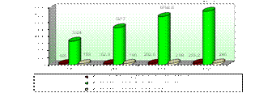

Paper Title :
EFFECTS OF GREENHOUSE TYPES TO VEGETABLE PRODUCTION IN UZBEKISTAN
Abstract
Agricultural products grown in greenhouses, in particular, vegetables that are required to satisfy the food demand of the population play a critical role in continuous supply of quality food and fresh vegetables to the country supply of the people residing in the country. During the research, 150 dekhan (traditional household plots) farms involved in greenhouse vegetable production in different regions of Uzbekistan were investigated and the efficiency of greenhouse vegetables grown in those farms was assessed. The investigations revealed that vegetable production in such types of greenhouses is directly linked with vegetable growing time, greenhouse system efficiency and implementation of innovative technology; however, despite the high vegetable growing costs the economic efficiency of vegetable production has increased.
Author
Iskandarov Sanjarbek Tursunbekovich
Tashkent Institute of Irrigation and Melioration
Tashkent, Uzbekistan
Paper Transcript of Paper Titled :
EFFECTS OF GREENHOUSE TYPES TO VEGETABLE PRODUCTION IN UZBEKISTAN
Effects Of Greenhouse Types To Vegetable Production In Uzbekistan
Iskandarov Sanjarbek Tursunbekovich
Tashkent Institute of Irrigation and Melioration
Tashkent, Uzbekistan
Abstract
Agricultural products grown in greenhouses, in particular, vegetables that are required to satisfy the food demand of the population play a critical role in continuous supply of quality food and fresh vegetables to the country supply of the people residing in the country. During the research, 150 dekhan (traditional household plots) farms involved in greenhouse vegetable production in different regions of Uzbekistan were investigated and the efficiency of greenhouse vegetables grown in those farms was assessed. The investigations revealed that vegetable production in such types of greenhouses is directly linked with vegetable growing time, greenhouse system efficiency and implementation of innovative technology; however, despite the high vegetable growing costs the economic efficiency of vegetable production has increased.
Keywords: vegetable production; economic efficiency
I. INTRODUCTION
Changes in economy are, in all their aspects, connected with the formation and development of market relations. For instance, increasing the volumes of vital agricultural products that are of great importance to the republic requires the establishment of stable domestic market conditions, and especially, the development of global demandable product manufacturing. In addition, greenhouse vegetables, in particular, vegetables that are required to satisfy the food demand of the population, play a critical role in continuous supply of quality food and fresh vegetables to the country supply of the people residing in the country.
Uzbekistan has a great potential for continuous vegetable growing, this is evidenced by the fact that the volumes of agricultural products made in the republic are constantly increasing (Figure 1).
- The Republic’s Vegetable Growing System Development Trend [1]
2. The current state of vegetable production in Uzbekistan
According to the analysis results, in the period from 1991-2012 the vegetable cultivated lands were extended to 68,2 thousand hectares (in 1991 – by 165 thousand hectares, in 2012 – by 233,2 thousand hectares). The vegetable production volumes were increased 22,7 times (in 1991 - 3324 thousand tons, in 2012 – 7539,7 thousand tons), whereas the vegetable produced per capita rose from 165 kg to 246 kg.
Today, those involved in greenhouse vegetable production are mainly comprised of private business entities, e.g. dekhan farms and farms, smallholdings owned by local people and private entrepreneurs. It should be noted that above mentioned farms and business entities mainly use plastic and glass greenhouses.
For example, in 2012, there were 31297 greenhouses in the republic with total area counting 7173,5 hectares, out of which the number of glass greenhouses was 686 with 326 hectare-area, while the quantity of plastic greenhouses equaled 30611 with 6847,5 hectare-areas. Plastic greenhouses (most of them), in turn, can be divided into two types: heated greenhouses and non-heated (Chinese horticultural techniques) greenhouses. In addition, there are double layer plastic greenhouses based on Korean horticultural techniques, modern air heater greenhouses based on Holland horticultural techniques, and Israeli mini greenhouses for hydroponic substrate production.
Since construction and establishment of glass greenhouses require large amounts of funds, the share of such greenhouses in the total number greenhouses equals 2,2 percent. The share of plastic greenhouses is 97,8 percent, while their share in total greenhouse land area is 95,5 percent.
However, as the analysis shows, most of greenhouses where vegetables are grown (89,4 percent) are mainly belong to dekhan farmers and smallholding owners. The rate of vegetable production by farms and private entrepreneurs still remains low: 6,4 percent and 4,2 percent, respectively. In classifying the greenhouses by type it can be observed that most of greenhouses used by dekhan farms and smallholding owners in vegetable cultivation are plastic ones (90,7 percent). The ratio of glass greenhouses in the total counts 31,3 percent. The percentage of plastic greenhouses used in farms is 5,9%, whereas the glass ones is 29,5%; the number of plastic greenhouses used by private entrepreneurs is 29,5%, glass ones – 39,2 private entrepreneurs.
Today, in our republic tomatoes and cucumbers are grown more frequently compared to other types of vegetables cultivated in greenhouses. In particular, the share of tomatoes cultivated in total greenhouse area is 57,6 percent, while the amount of cucumbers is 29,1 percent, the rest of vegetables grown in greenhouses are citric and other vegetables that count 13,3percent. Thus, tomatoes and cucumbers constitute the largest amount of vegetables produced in greenhouses (Table 1).
Moreover, in analyzing the agricultural production volumes in terms of business entity types, the average tomato yield equaled 47,72 tons/ha, whereas the average cucumber yield was 43,33 tons/ha. From this the yield of tomatoes and cucumbers cultivated by farms is 58,48 tons/ha and 48,47 tons/ha, respectively; the yield of tomatoes and cucumbers cultivated by dekhan farms is 40,48 tons/ha and 30,01 tons/ha, respectively; and the yield of tomatoes and cucumbers cultivated by private entrepreneurs is 59,35 tons/ha and 90,46 tons/ha, respectively.
Parameters |
Green- houses of all Types |
including: |
|||
Farms |
Dekhan Farms and Small holdings |
Private Entrepreneurs and Other |
|||
Total area of greenhouses, ha |
7173,5 |
1965 |
4222 |
986,5 |
|
Total volume of greenhouse agricultural products, tons |
314091,3 |
97528,38 |
154728,6 |
61834,3 |
|
Tomato |
Greenhouse area, ha |
4130,7 |
1097 |
2497 |
536,7 |
Products cultivated, ton |
197105 |
64158 |
101095 |
31852 |
|
Average yield, centner/ha |
477,2 |
584,8 |
404,8 |
593,5 |
|
Share in total number of greenhouses, % |
57,6 |
55,8 |
59,2 |
54,4 |
|
Cucumber |
Greenhouse area, ha |
2086,9 |
540 |
1252 |
294,9 |
Products cultivated, ton |
90426 |
26174 |
37576 |
26676 |
|
Average yield, centner/ha |
433,3 |
484,7 |
300,1 |
904,6 |
|
Share in total number of greenhouses, % |
29,1 |
27,5 |
29,6 |
29,9 |
|
Citric and Other Vegetables |
Greenhouse area, ha |
956 |
328,3 |
472,8 |
154,9 |
Products cultivated, ton |
26560,9 |
7196,8 |
16058 |
3306,1 |
|
Average yield, centner/ha |
277,8 |
219,2 |
339,6 |
213,4 |
|
Share in total number of greenhouses, % |
13,3 |
16,7 |
11,2 |
15,7 |
|
- Vegetable Cultivated Land Areas and Production Volumes in Greenhouses Owned by Different Business Entities of the Republic (as of 2012) [2]
The analysis shows that compared to dekhan farms and smallholding owners, the farms and private entrepreneurs have more advanced and modern technology, they possess various types of hybrid seeds and practice innovative agricultural techniques. Therefore their yield is much larger than the one achieved by dekhan farms and smallholding owners.
For developing and enhancing the greenhouse vegetable production system, and bringing it into compliance with international standards, it is feasible to investigate the global greenhouse vegetable production planning practice.
Thus, the main objectives and goals of greenhouse vegetable production development are as follows: firstly, continuous supply of these products to the domestic market and satisfaction of population needs; and secondly, increasing the export volumes and raising the quality to a new level.
The basic prerequisites for increasing the efficiency of greenhouse vegetable production are the rational human resource management, use of released varieties of seeds that have high biologic efficiency. In addition, implementation of intense and innovative techniques for complex integration of all production processes and reduction of resource costs, efficient use of minerals and organic fertilizers, as well as adoption of chemical and biological techniques for flora protection are required.
3. Methodology
In assessing the efficiency of greenhouse vegetable production, its unique characteristics and properties should also be taken into consideration. The major objective of greenhouse vegetable system is production of fresh vegetables and supply of the population with these types of products in winter and spring periods. Production of vegetables in greenhouses allows making a harvest several times a year.
Based on the above-mentioned characteristics of greenhouse vegetable production the following parameters can be used in assessing its economic efficiency:
- gross harvest of vegetables (by type);
- amount and value of vegetables harvested from 1m2 greenhouse area;
- labor resources used for one time production;
- unit cost of one time production (according to the types of costs: heating and seeding costs, mineral fertilizer, chemical agent costs and etc.);
- average selling price of a single product;
- heating and seeding costs, mineral fertilizer, chemical agent and watering costs incurred per 1m2 greenhouse area and 100 kg of the product;
- gross profit;
- net profit per 1m2 greenhouse area and 100 kg of the product;
- production profitability.
During the Research 150 dekhan farms involved in greenhouse vegetable production in different regions of Uzbekistan were investigated and the efficiency of greenhouse vegetables grown in those farms was assessed.
4. Results
The dekhan farms investigated have been involved in greenhouse vegetable production for many years and are deemed to be highly experienced smallholding farms. The greenhouses they possess were built 15-20 years ago; they are plastic greenhouses that have a simple (local) design and based on heavy metals (try square, e.g. triangle steel or reinforced framed). These greenhouses have been functioning for many years. The area of greenhouses owned by the dekhan farms investigated was 0,01-0,10 ha.
- Economic Efficiency of Vegetable Production in Various Types of Greenhouses (in 2013) [4]
Parameters |
Plastic Green houses (Dekhan Farms in Andizhan Region) |
Glass Greenhouses |
Chinese Horticultural Techniques |
Korean Horticultural Techniques (Double Layer Plastic Greenhouses ) |
Modern Techniques (Mexmash Agro) |
The volume of products harvested from 1 m2 land area, kg |
6 |
12 |
7 |
15 |
30 |
Unit cost of 1 kg of tomatoes, soums |
1017 |
1758 |
1337 |
1538 |
1922 |
Selling price of 1 kg of tomatoes |
2500 |
3000 |
2500 |
4000 |
5000 |
Profit made from sales of 1 kg of tomatoes, soums |
1483 |
1242 |
1163 |
2462 |
3078 |
Profit made per 1m2 land area, soums |
8898 |
14904 |
8141 |
36930 |
92340 |
Profitability coefficient, % |
145,8 |
70,6 |
87,0 |
160,1 |
160,1 |
Greenhouse operating period, month |
4-5 |
4-5 |
3-4 |
5-6 |
8-9 |
In view of this, unit cost of producing 1kg of tomatoes in plastic greenhouses amounted to 1017 soums, the selling price of these tomatoes was 2500 soums. The amount of profit made is 1483 soums, e.g. the profit per 1 m2 land area was 8898 soums. The final profitability coefficient equaled 145,8 percent.
During the research, comparative and relative assessment of the economic efficiency of vegetable production in 1 hectare of greenhouses of various types was performed (Table 3).
- Comparative and Relative Assessment of the Economic Efficiency of Vegetable Production in 1 Hectare of Greenhouses of Various Types
Parameters |
Plastic Green houses |
Glass Green houses |
Chinese Horticultural Techniques |
Korean Horticultural Techniques (Double Layer Plastic Green houses) |
Modern Techniques (Mexmash Agro) |
Greenhouse construction costs, thousand soums |
427020 |
639384 |
139520 |
716650 |
2110000 |
Yield, tons |
60 |
120 |
70 |
150 |
300 |
Vegetable production costs, thousand soums |
61020 |
210960 |
93590 |
230700 |
576600 |
Total cost, thousand soums |
488040 |
850344 |
233110 |
947350 |
2686600 |
Annual profit, thousand soums |
88980 |
149040 |
81410 |
369300 |
923400 |
Greenhouse construction cost payback ratio, % |
|
|
|
|
|
Year 1 |
20,8 |
23,3 |
58,4 |
51,5 |
43,8 |
Year 2 |
26,3 |
30,4 |
140,1 |
106,3 |
77,8 |
Year 3 |
35,7 |
43,7 |
х |
Х |
350,8 |
Year 4 |
55,6 |
77,5 |
х |
Х |
Х |
Year 5 |
125,1 |
344,8 |
х |
Х |
Х |
Despite the fact that 1 kg vegetable production volume was larger in other types of greenhouses (glass greenhouses, Korean methodology based greenhouses, and greenhouses equipped with modern technology), the production volume in greenhouses based on Chinese techniques was 12 to 30 kg. Whereas the average selling price varied from 3000 soums to 5000 soums, e.g. the economic efficiency rate equaled 160,1 percent. However, due to the shorter operation period (3-4 month) of these Chinese greenhouses, and the lower quality of products cultivated in such type of greenhouses compared with others, the profit per kilogram of cultivated product was 1163 soums, while the profitability rate was 87 percent.
Vegetable growing efficiency in the greenhouses investigated is directly linked to cultivation period, effectiveness of heating system, and implementation of modern horticultural techniques. However, in spite of the fact that production costs were high, an increase in the economic efficiency was observed.
Profit per 1 m2 land area = the amount of product harvested from 1 m2 4,5 (the amount of product harvested from 1 m2) х 983 (profit per kilogram of product) = 4423,5 soums.
The harvest and yield capacity of modern greenhouses was very high, for instance, in Holland the quantity of products harvested from 1 hectare land equals 1000 tons. At present, under the local conditions, this number amounts to 300-350 tons. The experts say that under the climatic conditions of our country, a sharp decline in the harvesting rate results from extreme weather warming in spring.
Yet, the payback period of such greenhouses is 2-3 years.
5. Discussion
The theoretical and practical aspects of this problem and the economic efficiency issues were studied in researches conducted by such foreign scientists, as V.P. Vasilenko, A.P.Kozlova, [5] K.K. Chalbaev,[6] V.V. Gorkovy, V.V.Kuznesov [7].
In Uzbekistan the theoretical and practical aspects of this problem were investigated by T.Kh.Farmonov, N.S.Khushmatov, [8]U.Mukhitdinova,[9] O.T. Jumaev [10]. These agricultural scientists studied the outdoor fruit and vegetable complex. The issue of improving the efficiency of greenhouse vegetable production has not been investigated in depth. In our opinion, the problem of assessing different techniques used in greenhouses and the economic efficiency of related planning activities implemented by private agricultural business entities, e.g. farms and dekhan farms has not been investigated either in the economic science, or agricultural science.
6. Conclusion
The main goals and objectives of comparative and relative economic assessment of vegetable production in various types of greenhouses is estimating and showing the feasibility of their payback period (coverage of costs) based on calculations of possible net profit per 1m2 land, the production profitability, and economic efficiency.
Thus, the indoor vegetable production network should pay a great attention to the increasing of greenhouse vegetable production volumes and improving the product quality, to the supply of these products to the market even during the out-of-season periods, reducing the unit cost and labor costs, and thus enhancing the competitiveness.
The investigations revealed that vegetable production in such types of greenhouses is directly linked with vegetable growing time, greenhouse system efficiency and implementation of innovative technology; however, despite the high vegetable growing costs the economic efficiency of vegetable production has increased.
References
- Data collected by the State Statistics Committee of the Republic of Uzbekistan for 2010-2013.
- Data provided by the Ministry of Agriculture and Water Resources of the Republic of Uzbekistan, 2008-2013.
- Data provided by the glass greenhouse, Uzbekistan Vegetables, Melon, and Potato Research Institute, 2011-2013.
- Data provided by Farms and Dekhan Farms, Andizhan District, Andizhan Region.
- Vasilenko V.P., Kozlova A.P., Cooperative and agroindustial organizational-economic structures. Мoscow: «Work»,1996 p. 35,64;
- Chalbaev K.K. Intensification of production and market relations. Мoscow: Economics. p. 1990-201;
- Kuznesov V.V. Farmers, production and consumer cooperatives: models, projects (recommendations). Rostov na Donu. 1996 p.18,24.
- Hushmatov N.S. Scientifical-practical basis of deepening of agricultural reforms and liberalization of the economy. Тashkent:-2006-p.18,40;
- Muhiddinova U.S. Иқтисодиётни модернизациялаш шароитида мева-сабзавотчилик маҳсулотлари бозорини ривожлантириш йўллари The ways of development of the fruit and vegetable market in the context of the modernization of the economy. Тashkent: 2010-p.12;
- Jumaev O.T. Кўп укладли иқтисодиёт шароитида мева-сабзавотчилик мажмуасида кооперацияни ривожлантириш йўллари The ways of development of copperatives in fruit-vegetable sector in the context of the complex multistructural economy Тashkent:2003-8-p.16;